树莓派系统安装及连接¶
环境工具及镜像下载¶
树莓派Ubuntu镜像及相关软件¶
链接：https://pan.baidu.com/s/1HjXy5vfIDFAJBZq3gl8D0w 提取码：czxy
烧录工具下载(Windows版)¶
http://down10.zol.com.cn/sysanquan/balenaEtcher_v1.5.102.exe
或使用官网原链接(可能比较慢)
https://github.com/balena-io/etcher/releases/download/v1.5.102/balenaEtcher-Setup-1.5.102.exe
烧录系统镜像¶
1、选择镜像文件¶

2、选择目标盘¶
- 点击Select Target
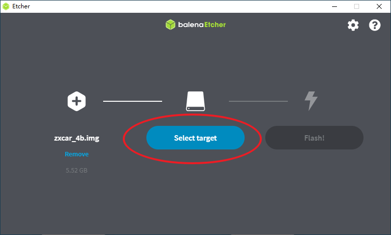
- 选择装有TF卡的USB设备
可以通过Size查看大小是否符合自己的TF卡大小，如果没有条目可选，或大小和TF卡大小不一致，请先确认读卡器是否可用或尝试格式化TF卡。

3、点击Flash!开始烧录¶
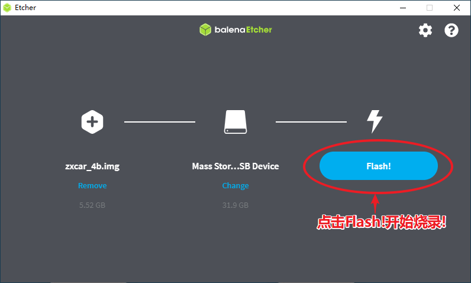
- 烧录中状态
烧录时可观察进度和剩余时间，如果进度条长时间没有变化，或烧录时间未减少。请检查确认读卡器和TF卡是否损坏。烧录完成之后还有会有个验证过程，Validating... 等待完成即可。
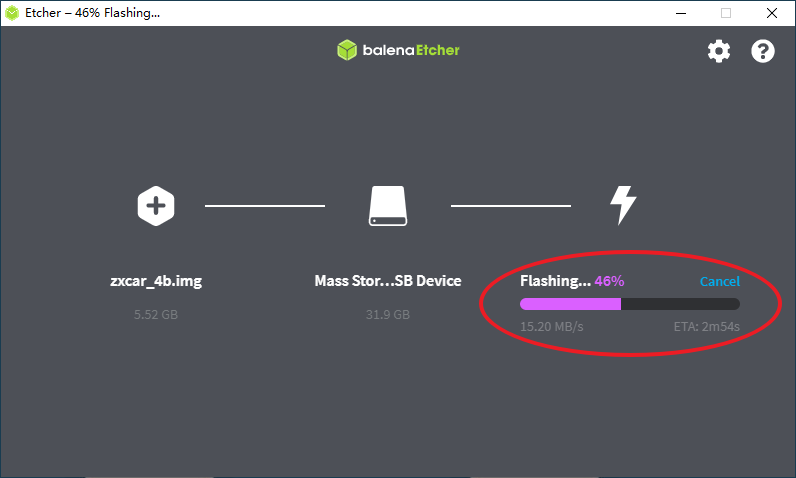
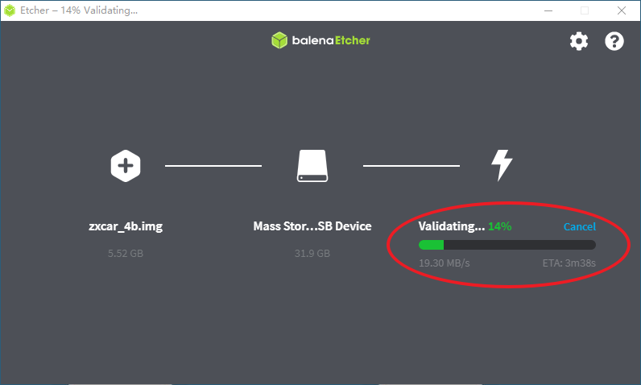
4、烧录完成¶
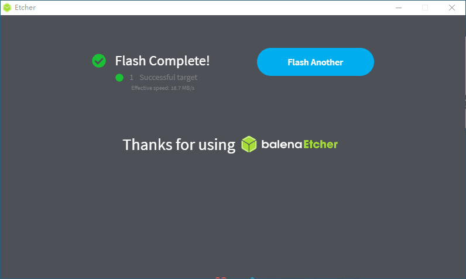
异常处理¶
如果提示烧录完成，但是下边有红点为：Failed target, 则建议重新格式化TF卡再重新烧录
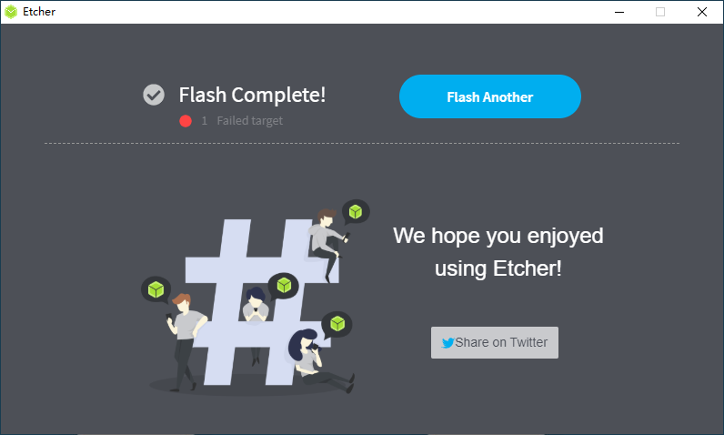
烧录完成后，弹出USB设备，从读卡器中拔出TF卡，插入到树莓派即可。
我们的树莓派系统已经安装完毕，接下来就要让他和我们的电脑放到同一个网络下，然后对其进行连接控制啦。
Wifi的创建及自动连接¶
此镜像在系统启动后，会自动以hm123456789为密码连接名称为heimarobot的Wifi，所以要求自行创建热点或使用路由器，将Wifi的名称设定为heimarobot。以下教程以Win10自带的热点功能为例。如果您使用的是Win7，则建议下载360免费Wifi进行热点的创建。
1、创建Wifi¶
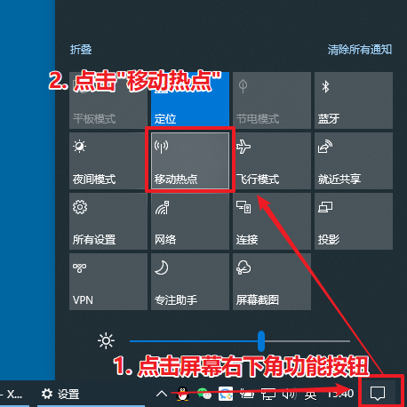
2、点击编辑按钮¶
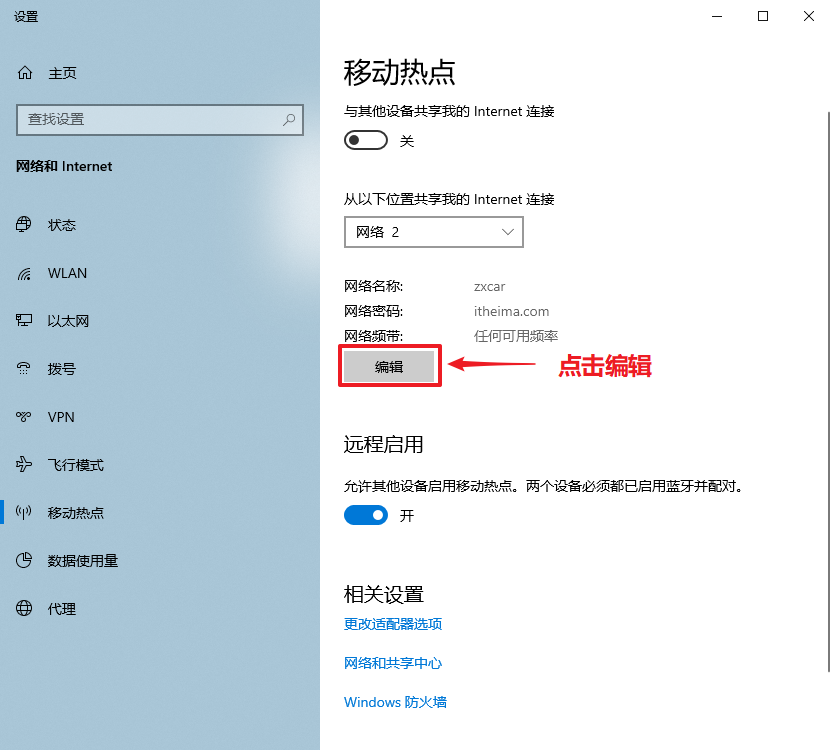
3、 指定网络名称和密码¶
指定网络名称heimarobot和网络密码hm123456789（必须按照此名称密码设置）后，按保存
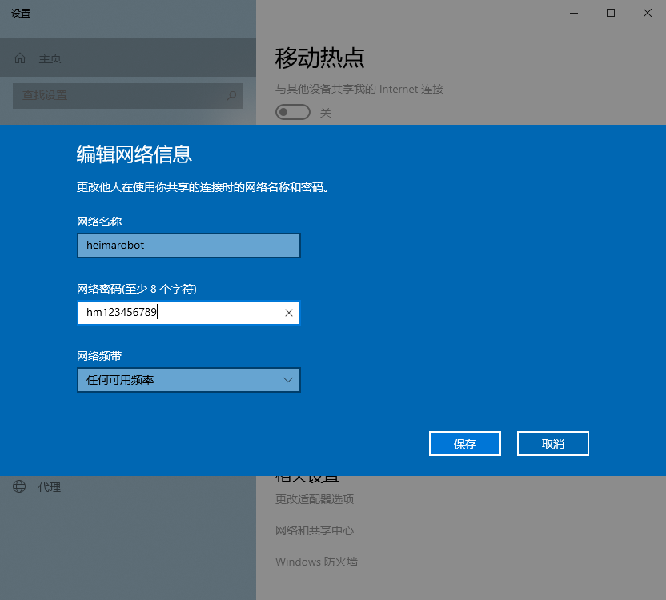
4、打开移动热点¶
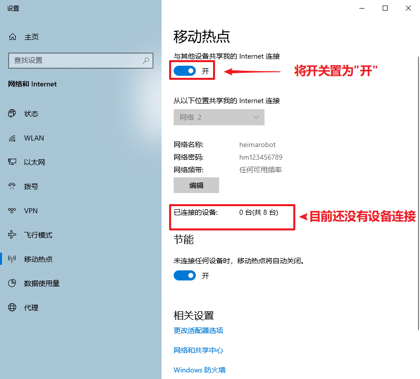
5、确认已连接设备及其IP¶
此时需要重启树莓派设备，过一小会儿，可见树莓派已上线，可见其IP地址为192.168.137.205：
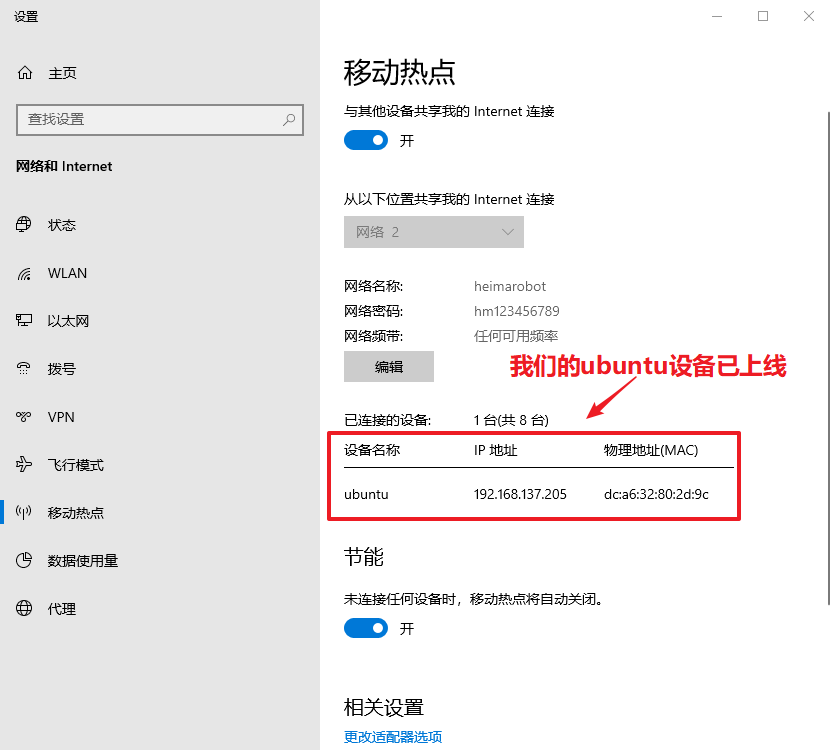
另一组支持的用户名为zxcar密码为itheima.com
此时我们的树莓派已经连接上了我们的Wifi热点，接下来可以进行远程连接控制啦。
树莓派IP地址确认¶
如果Wifi使用的是路由器，则可直接进入路由器查看新接入的设备IP地址。
如果使用的Wifi是Win10创建的热点，可以直接在移动热点中查看其设备的IP地址。如上边的教程所示。
如果使用的Wifi是Win7+360免费Wifi。则需要安装使用Advanced_IP_Scanner.exe进行IP地址扫描。
1、确认Wifi的IP网段¶
按Win + R输入cmd打开控制台。输入ipconfig查看无线局域网适配器地址，这里是192.168.137.1

2、进行IP段扫描并确认IP地址¶
如果
安装过Advanced_IP_Scanner后，将之打开，根据Wifi的IP网段修改扫描的范围，这里是192.168.137.1-254，可以看到名称为ubuntu.mshome.net的设备已被扫描到，此时对应的IP地址为192.168.137.205，随后我们连接此IP地址即可
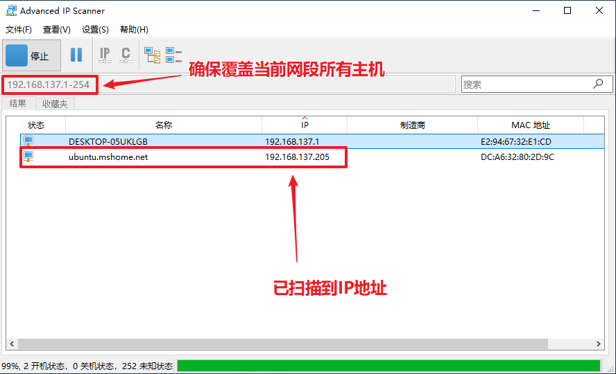
3、测试IP地址是否可联通¶
按Win + R输入cmd打开控制台，输入以下命令。这里的ip地址要根据刚刚获取到的设置。
ping 192.168.137.205
看输出是否如下：
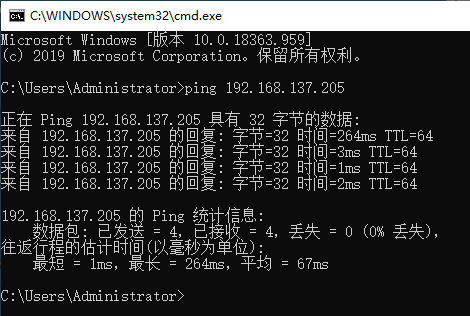
XShell远程连接¶
1、安装Xshell远程连接工具¶
解压缩XmanagerEnterprise5-Xshell-Xftp.rar，双击Xme5_.exe，一路点下下一步即可，有可配置选项的保留默认就行。
也可自行百度xshell下载最新版本。
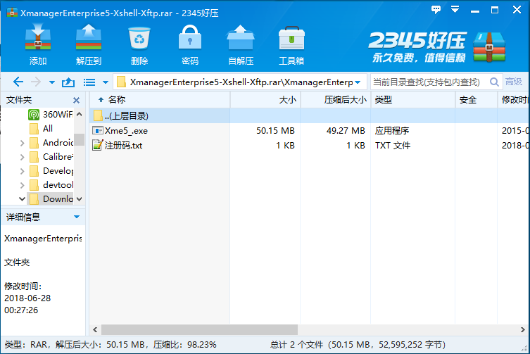
2、新建会话¶
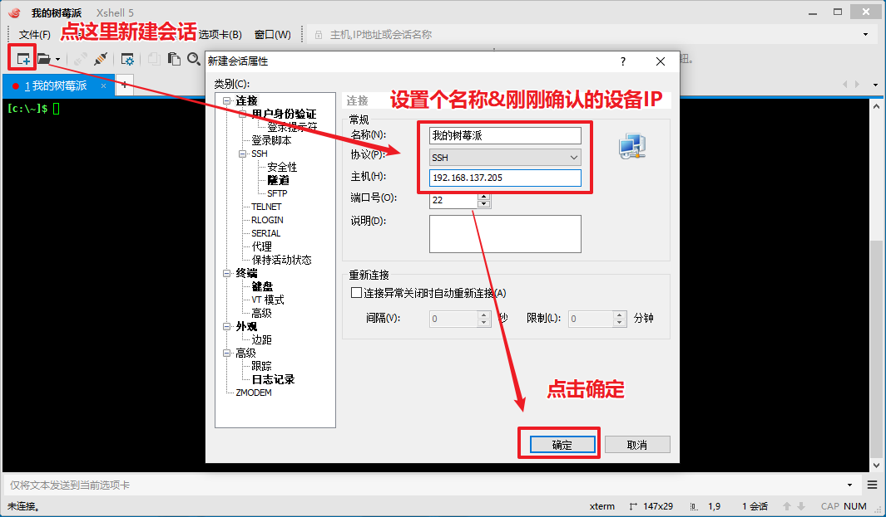
3、打开刚刚新建的会话¶
下次可直接打开会话列表，不需要重复新建会话
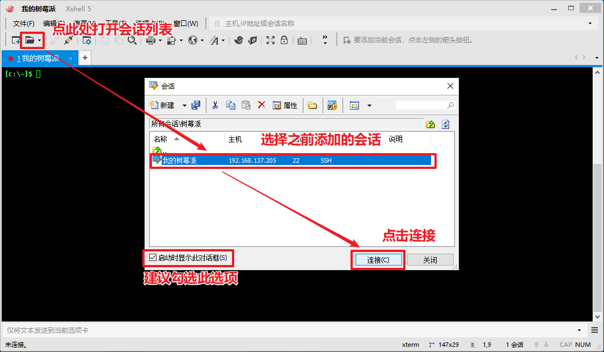
4、接受并保存密钥¶
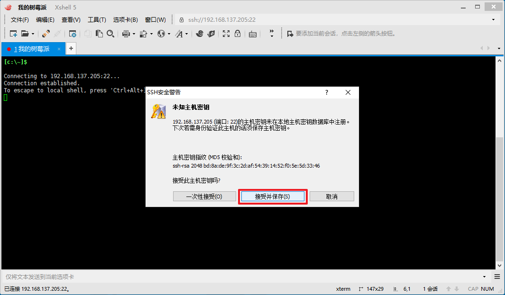
5、输入用户名及密码以连接¶
输入用户名为zxcar，并勾选记住用户名：
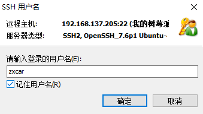
输入密码为123，并勾选记住密码：
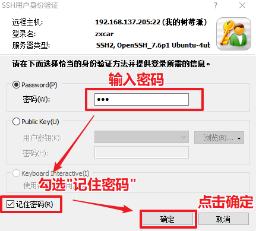
如果出现如下界面内容，这说明连接成功啦：